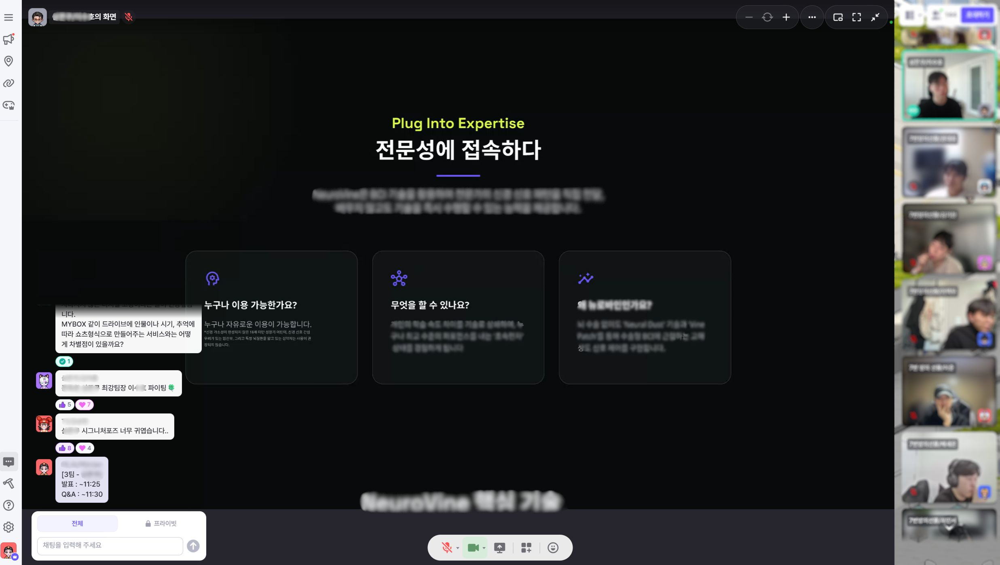

*26년도 K-디지털 트레이닝 정부정책 변경으로 인한 본인부담금 발생(최대 60만원)
{수십 가지 클라우드 상품 경험}을 시각화해온 기술 노하우를 미래 프로덕트 디자이너에게 전수합니다.
kt cloud는 수십 가지의 복잡한 클라우드 상품을 단일 플랫폼에서 사용자 친화적으로 시각화하고 UX를 설계해왔습니다. 이 경험을 기반으로 디자인 시스템 구축, 데이터 분석 기반 UX/UI 개선, 생성형 AI 활용 등 실제 제품 디자인과 관리에 필요한 실무형 노하우를 교육합니다.

디자인 요구사항 분석과 산출물 관리, 협업 및 리뷰 시스템을 체계적으로 운영하는 방법을 익힙니다.
글로벌 테크 기업부터 스타트업 C-Level까지, 실무 리더십과 글로벌 감각을 겸비한 프로덕트 디자인 전문가
*운영상의 이유로 강사가 변경될 수 있습니다.
현직 전문가와의 1:1 멘토링을 통해 실무 관점에 대한 깊이 있는 인사이트를 얻어갑니다.
TECH UP의 훈련생들이 하나의 아이디어로 구성원과 팀을 이루어 같은 목표를 향해 함께 도전해봅니다.
업계 전문가들이 직접 전하는 생생한 현장 사례와 실무 트렌드 최신 기술 동향을 미리 경험할 수 있습니다.
실무 설계원칙과 코드 구조 관점에서 다각적인 리뷰를 받아 실력을 한 단계 성장시킬 수 있습니다.
탁월한 성과를 인정받은 우수 수료생은 kt cloud 채용전형에서 서류 전형이 면제되거나 가점을 받을 수 있습니다.
체계적인 컨설팅을 통해 취업에 필요한 이력서와 포트폴리오를 완성도 있게 만들어갈 수 있습니다.
포트폴리오만으로 빠르게 선발할 수 있습니다.
가능성을 지닌 지원자는 그룹 면담으로 곧장 진심을 확인합니다.